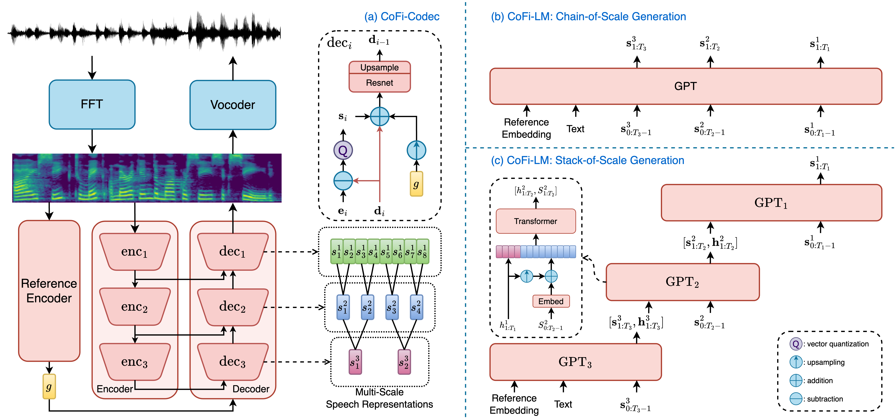

Haohan Guo, Fenglong Xie, Dongchao Yang, Xixin Wu, Helen Meng
The Chinese University of Hong Kong, Hong Kong SAR, China
Xiaohongshu Inc., Shanghai, China
hguo@se.cuhk.edu.hk
[paper]

The neural codec language model (CLM) has demonstrated its remarkable performance in text-to-speech (TTS) synthesis. However, troubled by ``recency bias", CLM lacks sufficient and equal attention to coarse-grained information at a higher temporal scale, often producing unnatural or even unintelligible speech. This work proposes CoFi-Speech to achieve coarse-to-fine CLM-TTS via multi-scale speech coding and generation. We train a neural codec, CoFi-Codec, to encode speech into a multi-scale discrete representation, comprising multiple token sequences with different time resolutions. Then, we propose CoFi-LM to generate this representation in two modes, chain-of-scale and stack-of-scale generation. In experiments, we present a three-scale CoFi-Speech that significantly outperforms single-scale academic and industrial baseline systems in zero-shot TTS on naturalness and speaker similarity. The analysis of multi-scale coding demonstrates the effectiveness of CoFi-Codec in learning multi-scale discrete speech representations. The coarse-to-fine generation is also validated as a crucial approach in pursuing a high-quality neural codec language model.